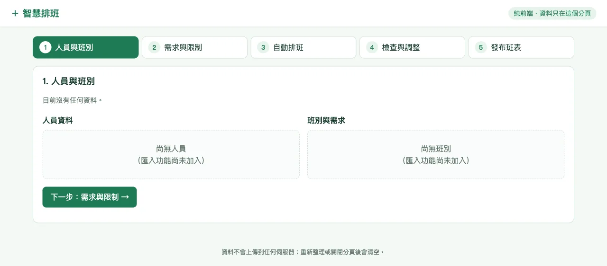
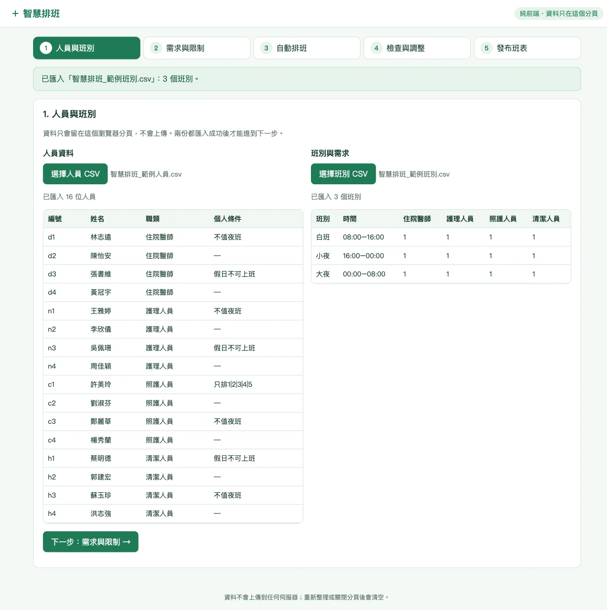
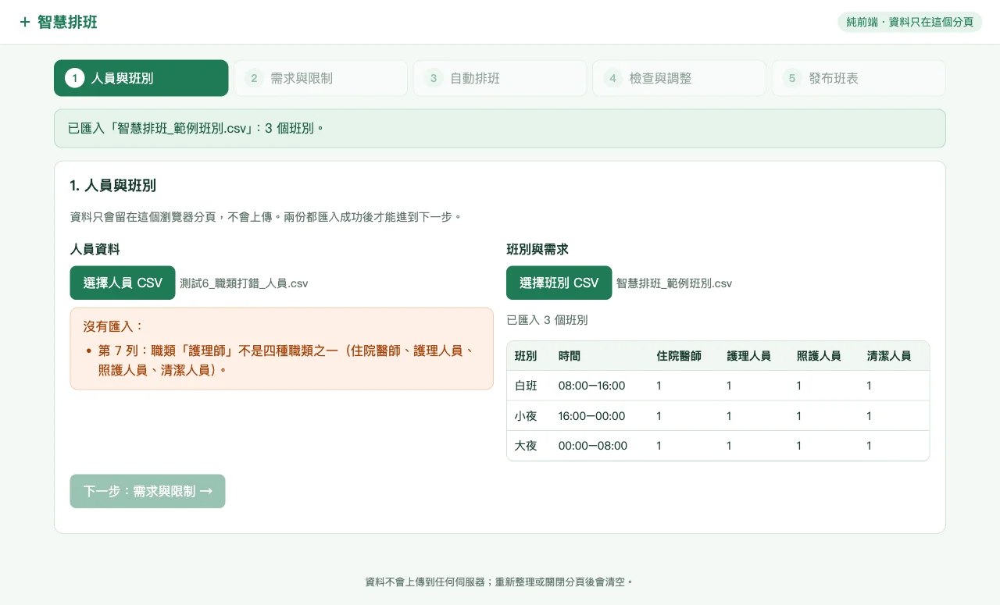
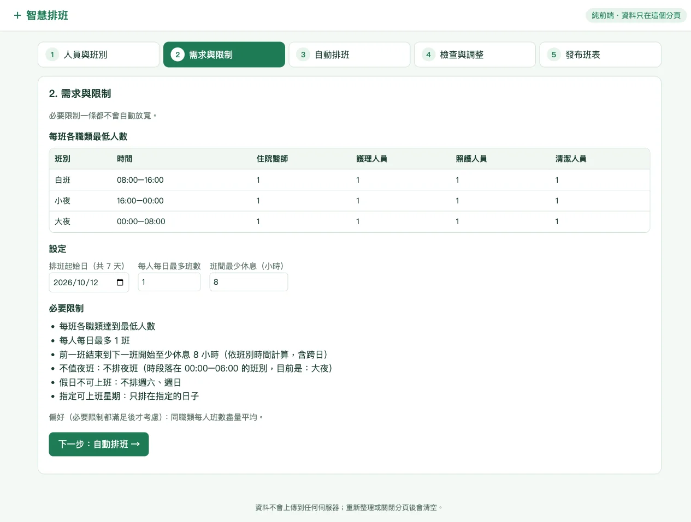
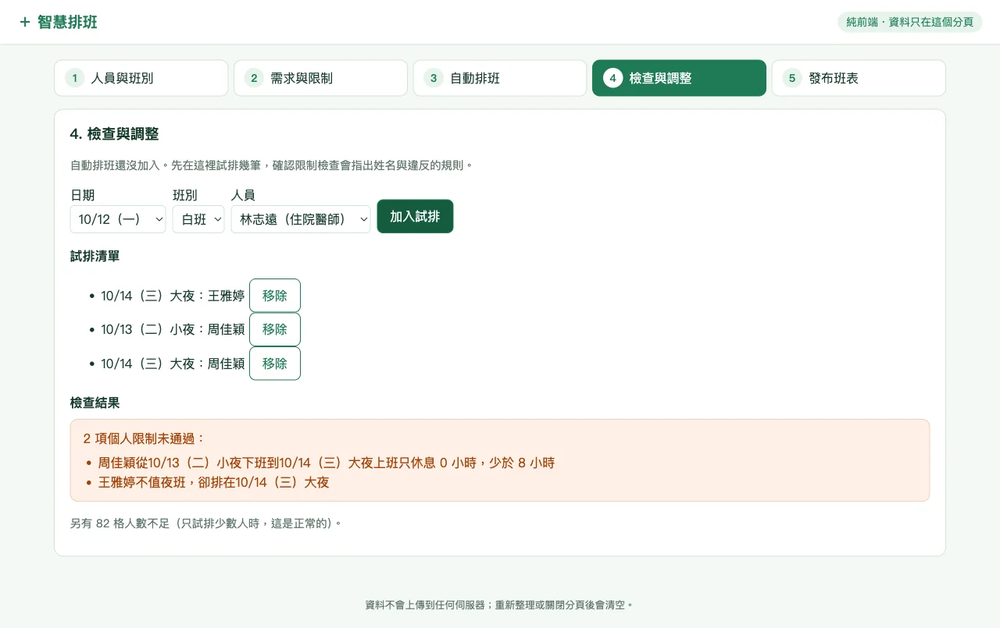
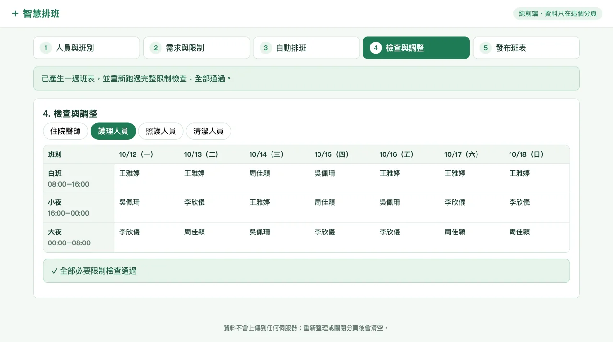
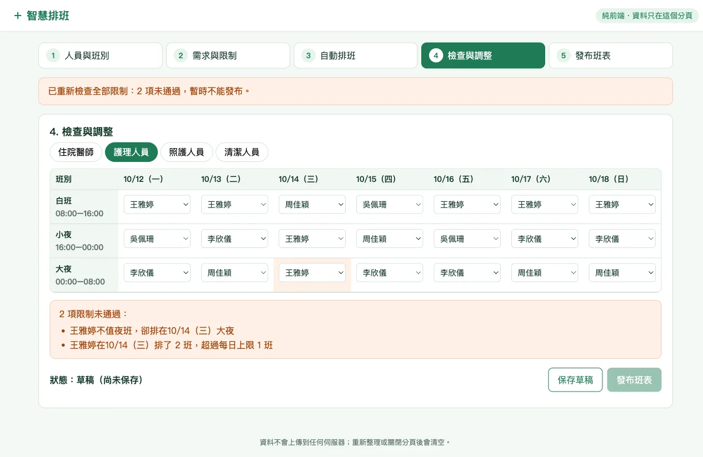
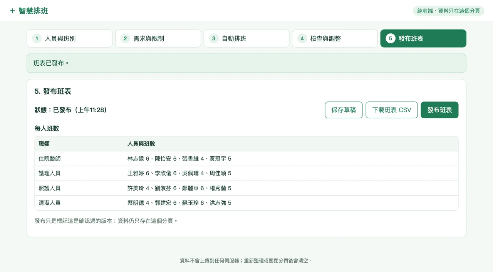
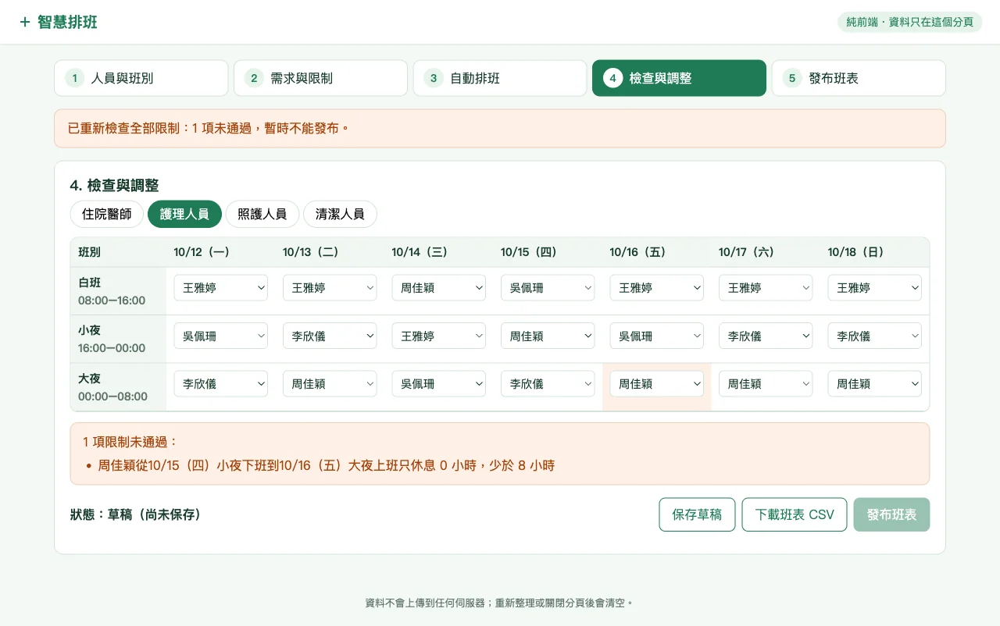
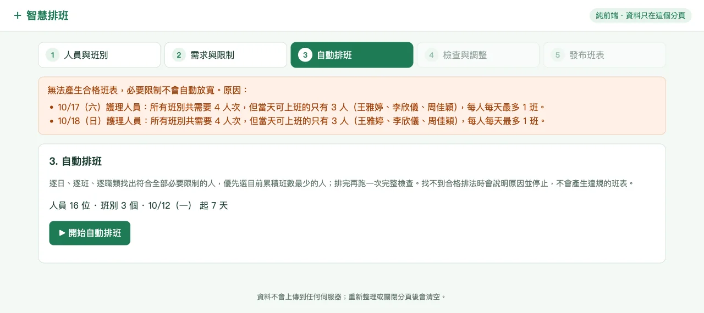

第二天 · 模組 06
模組 06｜AI 專題：照護場域排班小工具
排班要讓人力足夠、遵守每個人的夜班與假日條件，還要盡量公平。這個模組你會先操作一個做好的排班工具，再用測試資料檢查它，最後請 AI Agent 一層一層做出自己的版本。不需要會寫程式：你負責看懂規則、準備測試資料，並親自確認排出來的班表有沒有遵守規則。
在模組 01，你練習過把需求寫成看得到、可以驗收的條件；在模組 02，你讓 AI Agent 在專案資料夾裡工作。這一模組把兩者用在一個完整的小專題上：先寫清楚規則，再一層一層做、一項一項驗。
01學習目標與階段成果
你會得到兩樣東西：一個雙擊就能開啟的排班工具，可以匯入人員與班別、自動排班、手動調整並下載班表；以及一份測試紀錄，寫下每個測試怎麼操作、應該看到什麼、實際看到什麼。
- ① 看懂需求範圍、資料欄位與排班規則
- ② 操作範例用範例工具跑完一次排班
- ③ 測試範例用六個案例找出問題
- ④ 做自己的版本請 AI Agent 一次加一層功能
- ⑤ 測試並修正用同一組案例驗收
- 說出這個排班工具第一版做什麼、不做什麼。
- 看懂兩份範例 CSV，分清「必要限制」與「偏好」。
- 操作範例工具完成匯入、排班、調整、發布與下載。
- 用六個測試案例檢查工具，記下預期與實際結果。
- 請 AI Agent 逐層做出自己的版本，並用同一組案例驗收。
02專題需求與範圍
真實的排班要考慮法規、機構規範、請假與臨時調度。第一版先縮小範圍，只做一張可以檢查的一週班表。
一週固定三班、四種醫護職類；必要限制滿足後，再盡量平均分配班數。
重要原則：有解才產生班表；無解時要清楚回報，不能偷偷忽略限制。
| 項目 | 第一版要做 | 第一版不做 |
|---|---|---|
| 期間 | 一週七天（範例工具固定為 2026/10/12 週一到 10/18 週日） | 月班表、跨週連續 |
| 班別 | 白班 08:00–16:00、小夜 16:00–00:00、大夜 00:00–08:00 | 彈性班、加班 |
| 職類 | 住院醫師、護理人員、照護人員、清潔人員，各 4 人 | 職級、專長搭配 |
| 個人條件 | 不值夜班、假日不可上班、指定可上班星期 | 請假、換班申請 |
| 系統 | 純前端、CSV 匯入、資料只留在瀏覽器、可下載 CSV | 登入、資料庫、雲端同步 |
用工具完成一次排班，會依序經過五個步驟：
- ① 人員與班別匯入兩份 CSV
- ② 需求與限制確認最低人數與必要限制
- ③ 自動排班先守限制，再求平均
- ④ 檢查與調整手動換人後立刻重新檢查
- ⑤ 發布班表全部通過才能發布；下載不必先發布
範例中的最低人數、休息時間與個人條件都是練習用的簡化假設，不代表任何機構的人力標準或法規。範例中的單位名稱「安程照護」與人員姓名，請一律當作虛構的教學資料。
03人員資料、班別與規則
工具讀入兩份 CSV（可以用 Excel 開啟的表格文字檔）。先下載下來，對照下面的說明看一遍。
人員編號,姓名,職類,不值夜班,假日不可上班,指定可上班星期
d1,林志遠,住院醫師,是,否,
d2,陳怡安,住院醫師,否,否,
d3,張書維,住院醫師,否,是,
d4,黃冠宇,住院醫師,否,否,
n1,王雅婷,護理人員,是,否,
n2,李欣儀,護理人員,否,否,
n3,吳佩珊,護理人員,否,是,
n4,周佳穎,護理人員,否,否,
c1,許美玲,照護人員,否,否,1|2|3|4|5
c2,劉淑芬,照護人員,否,否,
c3,鄭麗華,照護人員,是,否,
c4,楊秀蘭,照護人員,否,否,
h1,蔡明德,清潔人員,否,是,
h2,郭建宏,清潔人員,否,否,
h3,蘇玉珍,清潔人員,是,否,
h4,洪志強,清潔人員,否,否,班別名稱,開始時間,結束時間,住院醫師最低人數,護理人員最低人數,照護人員最低人數,清潔人員最低人數
白班,08:00,16:00,1,1,1,1
小夜,16:00,00:00,1,1,1,1
大夜,00:00,08:00,1,1,1,1每個欄位的意思
| 欄位 | 意思 | 範例 |
|---|---|---|
| 人員編號 | 每人唯一的代號，不可重複 | d 住院醫師、n 護理人員、c 照護人員、h 清潔人員 |
| 職類 | 必須和四種職類的文字完全一致 | 「護理人員」不能寫成「護理師」 |
| 不值夜班 | 「是」＝不能排大夜 | 王雅婷、林志遠、鄭麗華、蘇玉珍 |
| 假日不可上班 | 「是」＝週六、週日不能排 | 張書維、吳佩珊、蔡明德 |
| 指定可上班星期 | 空白＝每天都可以；有填就只能排那幾天（1 是週一、7 是週日，用「|」分隔） | 許美玲「1|2|3|4|5」＝只排週一到週五 |
| 最低人數 | 每班每種職類至少幾人 | 全部是 1 |
必要限制與偏好
必要限制一條都不能違反；偏好是在必要限制都滿足後才盡量做到。分開寫，AI 才不會為了「平均」或「排滿」而默默放寬限制。
| 規則 | 種類 | 怎麼檢查 |
|---|---|---|
| 每班各職類達到最低人數 | 必要 | 7 天 × 3 班 × 4 職類，84 格都有人 |
| 每日最多 1 班 | 必要 | 同一天同一人只出現一次 |
| 班間至少休息 8 小時 | 必要 | 前一班下班到下一班上班的時間，注意跨日的小夜 |
| 不值夜班 | 必要 | 標「是」的人不在大夜 |
| 假日不可上班 | 必要 | 標「是」的人不在週六、週日 |
| 指定可上班星期 | 必要 | 有指定的人只在列出的日子 |
| 平均分配班數 | 偏好 | 同職類每人班數差距不要太大 |
護理人員有 4 位：王雅婷不值夜班，吳佩珊假日不上班。週六的白班、小夜、大夜各需要 1 位護理人員，每人每天最多 1 班。週六排得出來嗎？如果周佳穎請假呢？
參考答案｜週六排得出來嗎？
週六可排的是王雅婷、李欣儀、周佳穎三位（吳佩珊假日不上班），王雅婷不能排大夜，三個人剛好填滿三班。周佳穎請假時，只剩兩人要填三班，一定排不出來，週日也一樣。這種「資料本身排不出來」的情況，工具應該清楚說出缺口，而不是硬排。第 05 節的測試 2 就會用到它。
04動手操作範例工具
先用一個做好的版本跑一次，知道「完成」長什麼樣子。範例工具是一個 HTML 檔，不需安裝、不需網路，資料只留在目前的瀏覽器分頁。
練習 A：用範例資料完成一次排班
題目敘述 · Problem Statement
用第 03 節下載的兩份 CSV，在範例工具中完成五個步驟，並下載一份班表。
操作步驟
匯入。按「選擇人員 CSV」選人員檔，再按「選擇班別 CSV」選班別檔。
應看到：人員「16 人」、班別「3 個固定班別」，兩邊都標「已匯入」。按「下一步：需求與限制」。
看限制。畫面列出每班最低人數與五條必要限制。
應看到：「必要限制不會自動放寬」。按「下一步：自動排班」。
排班。按「▶ 開始自動排班」。
應看到：「已產生班表，所有必要限制均已通過。」
看班表。按上方的「住院醫師、護理人員、照護人員、清潔人員」切換班表。
應看到：每一格都有人，下方顯示「✓ 限制檢查通過」。
下載。按「下載班表 CSV」，用 Excel 開啟。
應看到：日期、星期、班別、時間、職類、人員編號、姓名七欄，中文正常。
發布。按「發布班表」。
應看到：「班表已發布。」
預期成果 · Expected Outcome
一份下載的班表 CSV，以及畫面上已發布的一週班表。
完成檢核 · Check it
- 在護理人員班表中，找不到王雅婷排在大夜。
- 在週六、週日的班表中，找不到吳佩珊。
- 重新整理頁面後，資料會消失、回到空白；所以重要班表要先下載。
範例包還有原始操作講義與給 Codex 的協作說明。下載解壓縮後，用 Codex 開啟資料夾，貼上下面這句。它改寫自範例包的「給Codex的第一句」：不指定啟動檔，由 Codex 依你的電腦選擇啟動方式。
請先閱讀這個資料夾的 README.md 與 AGENTS.md，接著在本機啟動這個資料夾的網站，並開啟 http://localhost:8765。請依我的電腦選擇可用的啟動方式；如果無法啟動，就直接用瀏覽器開啟 index.html。請向我簡短說明首頁中的排班系統、講義與範例資料入口，但先不要修改任何檔案。可能的 AI 回覆｜開啟範例包
以下假設使用本機的 Codex App，並已授予完整存取權限，所以它會實際讀檔與啟動網站。每次的字句都可能不同。
我已讀過 README.md 和 AGENTS.md，並在 http://localhost:8765 啟動了本機網站，瀏覽器應該已經打開首頁。
首頁有三個入口：
（1）智慧排班系統：匯入人員與班別 CSV，設定必要限制，產生並下載一週班表。
（2）操作與實作講義：說明工具的五個步驟，並提供六段逐步建立同類工具的提示詞。
（3）範例匯入資料：兩份 CSV，一份是 16 位人員，一份是白班、小夜、大夜三個班別。
我沒有修改任何檔案。關閉啟動的程式後網站會停止；需要時告訴我，我再幫你重新啟動。看到錯誤訊息時
先看資料
先比對欄位名稱、職類文字與 CSV 編碼，不要立刻修改排班演算法。
找出缺口
查看是哪一天、哪個班別、哪個職類沒有合格人選，不要要求系統忽略限制。
平均是次要
先確認必要限制是否讓某些人可選時段較少；平均是次要目標，不可凌駕安全限制。
05用測試案例檢查結果
畫面顯示「通過」，不等於規則真的被遵守。測試案例就是先寫好「怎麼操作、應該看到什麼」，再親自操作比對。下面六個案例涵蓋四種情況：可行的資料、排不出來的資料、故意違規的調整，以及容易漏掉的邊界。
練習 B：用六個案例測試範例工具
題目敘述 · Problem Statement
依下表逐一操作範例工具。每做完一個案例，把「實際看到」記下來；全部做完再打開參考結果對照。需要的測試檔已準備好，每份只和範例差一行。
每個案例都從重新整理頁面、重新匯入開始。沒有列出的檔案，就用原本的範例 CSV。
| 測試 | 怎麼操作 | 預期看到 |
|---|---|---|
| 1 可行資料 | 匯入兩份範例 CSV，自動排班 | 四種職類 7 天 × 3 班都有人；「✓ 限制檢查通過」 |
| 2 排不出來 | 改用「測試 2 人員檔」（少了周佳穎），自動排班，再按發布 | 說明無法排班，指出哪天、哪班、哪個職類；不能發布 |
| 3 違規調整 | 測試 1 排好後，在「護理人員」班表把週三大夜換成王雅婷；看完警告再換回原本的人 | 出現「王雅婷不可值大夜」、不能發布；換回後警告消失 |
| 4 跨日休息 | 測試 1 排好後，在「護理人員」班表找週三小夜的人（預設是周佳穎），把週四大夜也換成這個人 | 小夜 00:00 下班、大夜 00:00 上班，休息 0 小時，應出現休息不足的警告 |
| 5 改最低人數 | 改用「測試 5 班別檔」（白班護理人員最低 2 人），自動排班 | 白班每天 2 位護理人員，或說明人數不足 |
| 6 職類打錯 | 改用「測試 6 人員檔」（李欣儀的職類寫成「護理師」），匯入 | 說明哪一列的職類不對 |
參考結果｜範例工具的實際行為
以下是 2026-10-11 用範例包中的工具實際操作的結果。如果範例包更新，結果可能不同。
| 測試 | 實際看到 | 符合預期？ |
|---|---|---|
| 1 | 「已產生班表，所有必要限制均已通過。」 | 符合 |
| 2 | 上方「無法產生合格班表：週六白班：護理人員無可排人員」；下方「週六白班缺少護理人員、週日白班缺少護理人員」；發布顯示「仍有 2 項限制未通過，無法發布。」 | 符合（上方只寫第一個原因，要看下方才知道週日也缺） |
| 3 | 「1 項限制未通過：王雅婷不可值大夜」，無法發布；換回後恢復通過 | 符合 |
| 4 | 「✓ 限制檢查通過」 | 不符合：這一版只檢查「小夜接隔天白班」，沒檢查「小夜接隔天大夜」 |
| 5 | 白班仍只有 1 位護理人員，顯示通過 | 不符合：最低人數固定為 1，班別檔的數字沒有被使用 |
| 6 | 人員顯示 15 人，沒有任何說明；排班後出現週六、週日護理人員無解 | 不符合：打錯的那列被默默略過，看起來像人力不足 |
測試 4 到 6 說明三件事：
- 畫面寫了，不代表程式做了。畫面列出「班間至少休息 8 小時」，程式只處理其中一種跨日情況。
- 讀進來，不代表用到了。要改一個數字，看結果有沒有跟著變。
- 沒報錯，不代表沒錯。打錯職類的人被默默略過，就像不存在一樣。
預期成果 · Expected Outcome
一份六列的測試紀錄，每列有「怎麼操作、預期看到、實際看到、是否符合」。
完成檢核 · Check it
- 六個案例都是自己操作過，而不是只看參考結果。
- 能指出哪三個案例不符合預期，並用一句話說明原因。
遇到無解，請 AI「想辦法排出來」，它可能就放寬限制，例如讓同一人一天上兩班。無解代表人力不足，要由人決定調整人力或規則。
06請 AI Agent 做出自己的版本
現在從空白資料夾開始，請 AI Agent（例如 Codex）做出一個排班系統的 MVP（最小可用版本）：能匯入、能自動排、能檢查、能手動改、能下載，五件事都做得到就好，其他功能先不做。方法是一次貼一段提示、做完一層就親自檢查，通過了才貼下一段。
練習 C：逐層做出排班 MVP
題目敘述 · Problem Statement
在新的空資料夾中，依序完成準備與六層功能。每一層都附上建議提示、可能的 AI 回覆、完成後檢查與示範成果畫面。示範成果是依同一段提示做出的版本，每一層都存成獨立資料夾，可以直接打開操作；你的版本外觀與用字可以不同，只要通過同樣的檢查。
| 階段 | 這一層加入什麼 | 做完後你可以 |
|---|---|---|
| 準備 | 資料夾、範例 CSV、說明你的程度 | 讓 AI 知道你不寫程式，一次只做一小步 |
| 第 1 層 | 五個步驟的空白介面 | 點選切換五個步驟 |
| 第 2 層 | CSV 匯入與錯誤回報 | 匯入人員與班別，看到錯在哪一列 |
| 第 3 層 | 必要限制檢查 | 看到誰違反了哪條規則 |
| 第 4 層 | 自動排班 | 一鍵排出一週班表，排不出來時知道原因 |
| 第 5 層 | 手動調整、草稿與發布 | 換人後立刻重新檢查，違規就不能發布 |
| 第 6 層 | 下載 CSV 與離線交付 | 下載班表，把資料夾帶到別台電腦使用 |
建議 Prompt · Suggested Prompt
提示分成準備與六層，寫在下面各節。每一段都按「複製」，貼進同一個對話；做完該層的「完成後檢查」，通過了再貼下一段。
每層最後有一兩個小修改建議。先照原本的提示做完並通過檢查，再試著在提示中加一句或改一個數字，貼給 AI，看看結果怎麼變。一次只改一處；改壞了，可以對 AI 說「請把剛才的修改還原」。
準備：開好資料夾，說明你的程度
建立一個新資料夾，例如「我的排班工具」，把第 03 節下載的兩份範例 CSV 放進去。
用 Codex 開啟這個資料夾。
貼上下面的提示（與模組 01 的「提示 1」相同）。之後每一層的提示都貼在同一個對話中。
我完全沒有寫程式的經驗。請用一般用語說明，一次帶我做一小步，不要要求我讀懂或手動修改程式。
這一步先不要建立任何檔案，回覆「了解」，等我提出需求。可能的 AI 回覆｜準備
以下假設使用本機的 Codex App，並已授予完整存取權限。每次的字句都可能不同。
了解。我會用一般用語說明，一次只做一小步，不會要求你讀程式或手動修改。
我看到這個資料夾裡有兩份 CSV：智慧排班_範例人員.csv、智慧排班_範例班別.csv。目前沒有建立任何檔案，等你提出需求。完成後檢查：AI 只回覆、沒有建立任何檔案；資料夾裡仍只有兩份 CSV。
第 1 層：先做空白流程
先把五個步驟的「骨架」做出來，還不需要任何功能。這樣後面每一層都知道要加在哪一步。
請建立一個純前端智慧排班網站，不使用伺服器、資料庫或外部 API。流程分成：人員與班別、需求與限制、自動排班、檢查與調整、發布班表。初始畫面不可預載任何資料，先只完成可切換的介面。可能的 AI 回覆｜第 1 層
以下假設使用本機的 Codex App，並已授予完整存取權限。回覆中「試過」的內容只是示意；每次的字句、檔名與外觀都可能不同，請親自打開檢查。
已在這個資料夾建立 index.html，是一個不需要伺服器或網路的網頁。
怎麼開啟：在資料夾中雙擊 index.html，會用瀏覽器打開。
畫面上方有五個步驟：人員與班別、需求與限制、自動排班、檢查與調整、發布班表，點任何一個都可以切換。
目前沒有預載任何資料，人員與班別都顯示「尚無」；每一步都先放了說明，功能會在後面加入。
我打開試過：一開始停在「人員與班別」，五個步驟都能切換。下一步可以加入 CSV 匯入。完成後檢查：直接開啟 index.html；畫面停在第一步，而且人員與班別都是空白。

開啟第 1 層的示範成果（每一層都是獨立的資料夾，內含 index.html 與範例 CSV）
- 在提示最後加一句：「網站標題用『（虛構）日照中心排班』，每一步下方用一句話說明這一步要做什麼。」
怎麼確認：標題改變，五步各有一句說明，畫面仍然是空白資料。 - 把「發布班表」改成「確認並公告」。
怎麼確認：步驟名稱改了，但五個步驟的順序不變。
第 2 層：加入 CSV 匯入
讓工具讀入兩份 CSV。這一層最重要的是：資料有錯時，要說清楚錯在哪裡，而不是默默略過。
請加入兩個 CSV 匯入功能。人員欄位包含：人員編號、姓名、職類、不值夜班、假日不可上班、指定可上班星期。班別欄位包含：班別名稱、開始時間、結束時間，以及四種職類最低人數。資料只留在瀏覽器記憶體，不可上傳。可能的 AI 回覆｜第 2 層
以下假設使用本機的 Codex App，並已授予完整存取權限。回覆中「試過」的內容只是示意；請用自己的檔案親自匯入檢查。
已在「人員與班別」加入兩個匯入按鈕：「選擇人員 CSV」和「選擇班別 CSV」。資料只放在瀏覽器裡，不會上傳。
匯入時會檢查：
・欄位名稱是否齊全；
・人員編號不可空白或重複；
・職類必須是住院醫師、護理人員、照護人員、清潔人員之一；
・「不值夜班」「假日不可上班」只能填「是」或「否」；
・「指定可上班星期」只能填 1 到 7，用「|」分隔；
・時間要寫成 HH:MM，最低人數要是 0 或正整數。
有任何錯誤時，會列出第幾列、哪個欄位、寫了什麼，那份檔案不會匯入。兩份都成功後，「下一步」才能按。
我用資料夾中的兩份範例 CSV 試過：顯示 16 位人員、3 個班別。也把一列的職類改成「護理師」試過，會顯示「第 7 列：職類『護理師』不是四種職類之一」（測試用的檔案沒有留在資料夾）。完成後檢查：錯誤欄位會清楚回報；兩份檔案都成功後才能進到第二步。可以用練習 B 的「測試 6 人員檔」試錯誤回報。


- 在提示最後加一句：「匯入成功後，顯示每種職類各有幾人。」
怎麼確認：匯入範例人員檔後，四種職類都顯示 4 人。 - 加一句：「『不值夜班』與『假日不可上班』也接受 Y／N。」
怎麼確認：把一列的「是」改成「Y」仍能匯入；改成「可」會顯示錯誤。
第 3 層：建立必要限制檢查
在自動排班之前，先讓工具會判斷一張班表有沒有違規。之後自動排班與手動調整，都用同一套檢查。
請建立排班限制檢查函式：每班各職類達到最低人數；遵守不值夜班、假日不可上班與指定可上班星期；每人每日不超過設定班數；前一班結束到下一班開始符合休息時間。回傳所有違規原因，不可自行放寬任何限制。可能的 AI 回覆｜第 3 層
以下假設使用本機的 Codex App，並已授予完整存取權限。回覆中「試過」的內容只是示意；請親自試排檢查。
已加入限制檢查，會列出所有違規原因，不會放寬任何限制。
在「需求與限制」可以看到並調整三個設定：排班起始日（預設 2026/10/12 起 7 天）、每人每日最多班數（預設 1）、班間最少休息（預設 8 小時）。
我把「夜班」定義為時段落在 00:00–06:00 的班別，目前就是大夜；「假日」是週六、週日。休息時間依班別的開始與結束時間計算，包含跨日，例如小夜 00:00 下班接隔天大夜 00:00 上班，只休息 0 小時。
因為自動排班還沒做，我在「檢查與調整」先放了一個「試排」區：選日期、班別、人員後加入，就能看到檢查結果。
我試過：把王雅婷排進大夜，會顯示「王雅婷不值夜班，卻排在 10/14（三）大夜」。完成後檢查：故意安排不可值夜班的人，畫面會指出姓名與違反規則。
提示沒有說「夜班」是哪些班、「假日」是哪幾天，AI 會自己決定並寫在畫面上。到「需求與限制」讀一遍這些定義：符合你的意思就繼續；不符合，就在下一段提示中寫清楚，例如「小夜也算夜班」。


- 把提示中的休息時間寫明：「班間至少休息 11 小時。」
怎麼確認：試排同一人週一小夜、週二白班，應出現「只休息 8 小時，少於 11 小時」。 - 加一句：「每人每週最多 6 班。」
怎麼確認：試排同一人排滿 7 天，應出現超過每週上限。先算算看：如果改成每週最多 5 班，每種職類一週要 21 班、4 個人最多 20 班，第 4 層的自動排班會怎麼回報？
第 4 層：加入自動排班
現在才讓工具自己排。重點是先守必要限制、再求平均；排不出來時要說明原因並停下，不能交出違規的班表。
請加入一週自動排班。逐日、逐班、逐職類找符合必要限制的人選，優先選目前累積班數最少的人。完成後必須再跑一次完整限制檢查；若無解，顯示明確原因並停止，不可產生看似完成但違規的班表。可能的 AI 回覆｜第 4 層
以下假設使用本機的 Codex App，並已授予完整存取權限。回覆中「試過」的結果只是示意，不是真正的測試；每次的字句、檔名與外觀都可能不同，請親自操作檢查。
已在「自動排班」加入「開始自動排班」按鈕。
排班方式：從週一到週日，每一班、每一種職類，找出符合全部必要限制的人，優先選目前班數最少的人；某一格找不到人時，會退回去換前面的人選再試。排完會再跑一次完整的限制檢查，通過才顯示班表。
排不出來時，會列出原因並停在這一步，不會產生班表。
我用資料夾中的兩份範例 CSV 試過：
・完整資料：排出 7 天 × 3 班 × 4 職類的班表，顯示「全部通過」。
・刪掉周佳穎後：顯示「10/17（六）護理人員：所有班別共需要 3 人次，但當天可上班的只有 2 人」，週日也一樣，沒有產生班表。
請你也用這兩種資料自己試一次。下一步可以加入手動調整。完成後檢查：可行資料產生完整班表；刪減某職類人員後會得到無解原因。可以用練習 B 的「測試 2 人員檔」試無解。

- 加一句偏好：「在必要限制都滿足後，夜班（大夜）也盡量平均分配。」
怎麼確認：同職類每人的大夜次數差距不超過 1；必要限制仍全部通過。 - 加一句：「無解時，除了原因，也列出『可以考慮的調整』，例如需要多幾位哪個職類的人，但不要自動套用。」
怎麼確認：用測試 2 人員檔，畫面列出建議，班表仍然沒有產生。
第 5 層：加入手動調整
自動排出來的班表，人還是要能改。每改一次都要立刻重新檢查，有違規就不能發布。
請讓使用者可在班表中選擇其他同職類人員。每次手動調整後立即重新執行全部限制檢查，列出未通過項目；只要有違規就不能發布。保留保存草稿與發布狀態，但資料仍只存在前端。可能的 AI 回覆｜第 5 層
以下假設使用本機的 Codex App，並已授予完整存取權限。回覆中「試過」的內容只是示意；請親自換人檢查。
已把「檢查與調整」的班表改成下拉選單，每一格只能選同職類的人，也可以選「未安排」。第 3 層的「試排」區已經用不到，改成直接在班表中換人。
每次換人都會立刻重新檢查全部限制：有違規時，畫面列出原因、有問題的格子標成橘色，「發布班表」不能按。
下方顯示狀態：草稿（尚未保存）、草稿（已保存 幾點幾分）或已發布。發布後再修改，會自動改回草稿，需要重新發布。資料仍只在這個分頁，不會上傳。
我試過：把週三大夜換成王雅婷，出現 2 項違規、不能發布；換回原本的人後恢復通過。完成後檢查：換成不符合條件的人會顯示警告，換回合格人員後警告消失。

- 加一句：「下拉選單中，會造成違規的人在名字後面標示『（不符）』，但仍可以選。」
怎麼確認：在大夜的選單中，王雅婷後面有「（不符）」；選了以後仍會出現警告。 - 加一句：「保留一份修改紀錄，列出每次改了哪一天、哪一班、從誰換成誰。」
怎麼確認：換兩次人，紀錄出現兩筆，內容和你的操作一致。
第 6 層：加入下載與離線交付
最後一層讓班表可以帶走：下載成 Excel 能開的 CSV，整個資料夾可以複製到別台電腦，不需要網路。
請加入下載班表 CSV，按鈕在發布旁邊且不需要先發布。輸出日期、星期、班別、時間、職類、人員編號與姓名，加入 UTF-8 BOM 讓 Excel 正確顯示中文。最後整理成不依賴套件與網路、雙擊 index.html 就能使用的純前端資料夾。可能的 AI 回覆｜第 6 層
以下假設使用本機的 Codex App，並已授予完整存取權限。回覆中「試過」的內容只是示意；請親自下載並用 Excel 開啟檢查。
已在「發布班表」旁邊加入「下載班表 CSV」，不用先發布也能下載。
檔名像「班表_2026-10-12起_草稿.csv」，發布後下載會變成「已發布」。每一列是一個班次，欄位是日期、星期、班別、時間、職類、人員編號、姓名；檔案開頭有 UTF-8 BOM，用 Excel 開啟中文不會變亂碼。
資料夾整理如下：
・index.html：排班工具本身，不需要網路或安裝任何東西；
・samples：兩份範例 CSV；
・README.md：一頁使用說明。
整個資料夾可以複製到別台電腦，雙擊 index.html 就能使用。
我試過：排班後下載，檔案共有 84 筆班次。完成後檢查：中斷網路後仍可匯入、排班與下載；CSV 用 Excel 開啟不會出現亂碼。

開啟第 6 層的示範成果（資料夾內另有 README.md 與 samples）
- 加一句：「另外提供『以人員為列、日期為欄』的下載格式，方便貼到公告。」
怎麼確認：新檔案每列一個人、每欄一天，格子內是班別名稱；原本的下載格式不變。 - 把檔名改成你的單位名稱開頭，例如「（虛構）日照中心_班表」。
怎麼確認：下載的檔名改變，內容與原本相同。
練習 C 的成果與檢核
預期成果 · Expected Outcome
資料夾中有一個雙擊就能開啟的 index.html：從空白開始，匯入兩份範例 CSV 後可以自動排班、手動調整、全部通過才能發布，並下載中文正常的班表 CSV。這就是排班系統的 MVP。外觀可以和示範成果不同，只要操作結果一致。
完成檢核 · Check it
- 六層的「完成後檢查」都由你親自操作通過，不是只看 AI 說「完成了」。
- 用練習 B 的測試 1、2、3 測你的版本，結果和預期相同。
- 關閉網路後重新開啟 index.html，仍能匯入、排班與下載。
- 如果試了「改改看」，記下你改了哪一句、結果怎麼變，以及原本的檢查是否仍然通過。
練習 D：依測試結果修正
題目敘述 · Problem Statement
用練習 B 的測試 4、5、6 測你的版本。有不符合預期的，請 AI 修正；修正後六個測試全部重做一次，確認沒有把原本對的地方改壞。
建議 Prompt · Suggested Prompt
我用下面三個測試案例檢查了目前的排班工具，發現實際行為和預期不同。請只修正這三點，不要改變其他功能與畫面：
（1）跨日休息：同一個人排在某天小夜（16:00–00:00）與隔天大夜（00:00–08:00），休息 0 小時，應該被列為「休息不足」。請依班別檔中的開始與結束時間計算前後兩班之間的休息時數，少於 8 小時就算違規。
（2）最低人數：班別檔中各職類的最低人數要真的用在排班與檢查上。例如白班護理人員最低人數改成 2，就要排 2 位，排不出來時回報缺口。
（3）職類打錯：人員檔中職類不是四種職類之一時，要列出第幾列、寫了什麼，不可以默默略過。
修正後請用兩份範例 CSV 與這三個案例各試一次，用一般用語告訴我怎麼操作、應該看到什麼。可能的 AI 回覆｜練習 D
以下假設使用本機的 Codex App，並已授予完整存取權限。回覆中的測試結果只是示意；請用你自己的六個測試重新操作判斷。
已修正三點，其他功能沒有變動：
（1）休息時數改為依班別時間計算。小夜接隔天大夜等情況，休息少於 8 小時都會列為「某某於某日休息不足」。
（2）排班與檢查改用班別檔的最低人數。白班護理人員改成 2 時，會排 2 位；人數不足時，回報哪一天、哪一班還缺幾位。
（3）匯入人員時，職類不符的列會顯示「第 7 列：職類『護理師』不在四種職類中」，並停在第一步，請你修正檔案後再匯入。
怎麼測：
・跨日休息：把某人小夜隔天的大夜換成同一人，應出現「休息不足」。
・最低人數：匯入白班護理人員最低 2 人的班別檔並排班，白班每天應有 2 位護理人員。
・職類打錯：匯入有「護理師」的人員檔，應看到錯誤訊息，人數不會默默變少。
提醒：最低人數改成 2 後，護理人員一週需要的班數變多，可能出現無解；這是資料本身的限制，不是錯誤。預期成果 · Expected Outcome
修正後，六個測試都符合預期；或對仍不符合的項目，寫下原因與下一步。
完成檢核 · Check it
- 測試 4：小夜接隔天大夜時出現休息不足，且不能發布。
- 測試 5：白班確實排 2 位護理人員，或清楚回報缺口；改回範例班別檔後恢復原狀。
- 測試 6：錯誤訊息指出哪一列、寫了什麼，人數不會默默減少。
- 測試 1 到 3 重做後結果不變。
示範版本的測試結果
用第 6 層的示範版本做完六個測試，全部符合預期，所以這個版本不需要練習 D 的修正。原因是第 2、3 層的提示已經寫明「最低人數」與「前一班結束到下一班開始符合休息時間」，示範版本就依班別時間計算休息、也用了班別檔的最低人數。提示寫得越具體，越少需要事後修正；你的版本不一定如此，請以自己的測試結果為準。


測試 6（職類打錯）的結果就是第 2 層的畫面：指出第 7 列的錯誤，不會默默少一個人。
07成果檢核與使用界線
每一層都走同樣的循環
- ① 寫清楚規則資料欄位、必要限制與偏好分開
- ② 一次一層每段提示只加一種功能
- ③ 先寫預期操作前寫好應該看到什麼
- ④ 親自操作以自己看到的結果為準
離開本模組前，確認你有這些成果
- 一個雙擊就能開啟的排班工具，用範例資料能完成匯入、排班、調整、發布與下載。
- 一份六個測試的紀錄，寫下修正前後的實際結果。
- 能說明為什麼排不出來時，要由人決定怎麼處理，而不是讓工具放寬限制。
本模組的人員、班別與限制全部是虛構的教學資料，排班工具只是教學原型。真實排班涉及勞動法規、機構規範、人員健康與照護安全，須由主管與具資格的人員決定。
- 不要把真實員工姓名、職編、請假或健康資訊放進練習資料。
- 工具顯示「限制檢查通過」，只代表它檢查了寫進去的規則；沒寫進去的，它不會知道。
- 使用雲端 AI 服務前，先確認機構對資料上傳的規定。
- 本講義的範例與原型僅供教學與討論，不宜直接用於真實場域或正式排班。
到了模組 07 的照護紀錄草稿填寫工具，會用同樣的做法：先把欄位規則寫清楚，缺漏與待確認的地方標出來，再由你逐項核對。